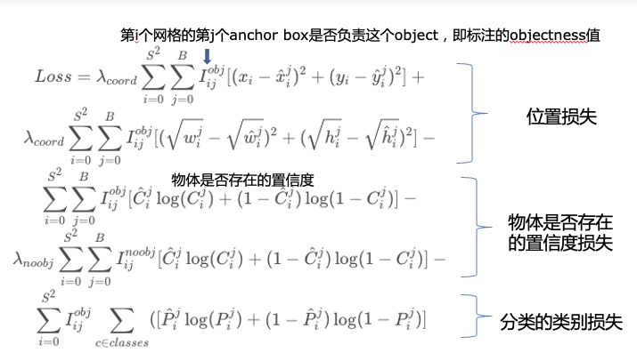

几个宏观上的理解
- 从直觉上理解，两阶段模型做了粗挑+精挑的操作。 那在目标物体的召回率上会有所下降，在精确率上会有所提升。
单阶段模型只有一个阶段，在物体的召回率上会比较高，但在精确率上会有所下降。 - 业务上会根据需求来挑模型，如果要求高精度，就用frcnn，精度和性能平衡，就用yolo。
YOLOv1
1.概述
YOLO是一个单独的end-to-end网络，其本质是吧目标检测问题当做一个回归问题去解决。
整体模型图如下：
backbone
基于GoogLeNet model，24个卷积层和两个全连接层，前20层在image1000上预训练，然后连上剩下的卷积层和全连接层再训练。
特点
是一个unified模型即整体性->把识别bbox，识别标签两个功能集成到一个网络中
训练时能够看到整个图片->即端到端，输出层是从整个特征图，其中每个位置上的通道就反应了这个位置的图像特征，因此yolo会比rcnn更少犯背景识别错误
注解：和两阶段检测模型不同，两阶段模型是先筛选ROI区域，此时卷积还不够深，还比较浅所以容易误识别背景为目标提取出来了；单阶段模型输出的特征图反应的是感受野区域上与目标物体相关的信息，输出时层数更深，所以对背景和物体的分辨能力更强，不容易犯背景误识别的错误。学习的是总体上的特征->对于输入的鲁棒性强
虽然精度离其他模型还有一些差距，但是贵在快
最后训练完备的模型推理时的输出：
输入：原始图像resize后的图像
输出：物体位置和类别
注意： RCNN系列模型是将检测模块分为两部分，物体类别是一个分类问题；物体位置（即求bbox）是个回归问题
2.1输入输出定义
输入：一个batch的image，shape是[batch_size,3,448,448]
输出：shape是[batch_size，Bboxs * 5 + Classes，size， size]
把图像分成S * S个grid cell，当有物体的中心落到一个cell中时（怎么判断？->confidence值），这个cell就要负责检测这个物体。每个cell要预测B个bbox，每个bbox都有一个相应的confidence
预测时，每个Bounding box包含五个数据值：
x,y为当前格子预测到的物体的bbox中心位置坐标。
w和y为这个格子的高度和宽度
confidence反应当前bbox包含物体的置信概率
confidence = P(object) * IOU(交并比)
若包含物体，P（）=1，否则为0。所以预测时输出的p值就是预测了这个bbox和object的IoU
每个grid cell预测C个种类，每个种类有个概率P值，每个grid cell只输出一组预测值
条件概率P（class i | Object）这个概率是基于grid cell包含object的概率为前提的，所以P（class i）=P（class i | Object）* P（object）
最后得到class-specific confidence = P（class i） * IOU，这个值说明了box中出现相应类的概率，也表征了预测的bbox对目标的拟合程度
所以输出的维数是S S （B * 5 + C）
在test时，在object所在的grid cell，yolo每次都会预测许多bbox，每个预测bbox都包含了一个预测的IOU大小，选取有更大IOU的bbox就会被选出来成为检测出来的框，预测的类别是每个grid cell中最大的那个Ci值
2.2 损失函数
损失分为两部分，bbox和种类预测。如果设为相同比重来构成总得损失函数不太理想->因为有的grid cell并不包含有效内容->影响了（overpower）包含目标物体的cell的梯度信息，导致confidence很低，所以将bbox损失的权重调整为5，confidence损失的权重调整为0.5。（应该是调出来的值）这样的直接结果就是大bbox中小的偏差相对于小bbox中小的偏差对损失影响较小。->为了实现这个目的，我们预测的值是width和height值的平方根
3训练过程
YOLO模型训练分为两步：
1）预训练。使用ImageNet 1000类数据训练YOLO网络的前20个卷积层+1个average池化层+1个全连接层。训练图像分辨率resize到224x224。训练一周，单个corp（应该是边框预测）88% top5准确率
2）用步骤1）得到的前20个卷积层网络参数来初始化YOLO模型前20个卷积层的网络参数，加四个卷积层和两个全连接层，随机初始化这几层的权重，然后用VOC 20类标注数据进行YOLO模型训练。为提高图像精度，在训练检测模型时，将输入图像分辨率resize到448x448。
3）最后一层的输出是归一化后的width和height，x，y
NOTE：只有当object在相应cell中时才会有分类损失，也只有最高IOU的predictor找到后才会有bbox相应的损失惩罚
训练时一开始学习率要小一点，慢慢升高，最后再降下来
使用了dropout来尽量避免过拟合
非极大抑制（non-maximal suppression）解决检测结果中，有多个区域重叠问题，增大了ap
Limitation
由于空间约束的原因，很难识别小的成群的目标
采用的特征相对比较粗糙
对于小目标的的识别可能定位不太准确
模型对比
RCNN使用一个region proposals来候选出待识别的对象，再用selective Search来生成大概2k个bbox，通过一个cnn来提取特征，再用svm对特征进行分类评分，再用线性模型调整bbox，非极大抑制来减少多重框，每个阶段都要单独调参，但是精度相对比较高。yolo一般就生成98个bbox，速度会快很多，而且是一个unified模型，运行也很快。
相对来说能够减少将背景误识别成object的概率
YoloV2（Yolo9000）
存在的问题：相比于f-rcnn，预测框不准，不全，
改良步骤：
1.加了BN层：mAp加了2%，丢掉了dropout
2.分类器：用了在ImageNet上预训练的模型。原始的分类器是在224 224的图像上预训练，然后检测448 448的图像，现在改成预训练后先在448 * 448的图上fine-tune。这个操作加了%4的mAP
3.卷积的过程中加入了anchor box：yolov1单纯在卷积层之后使用全链接层才获取特征。现在移除全连接层，变成了对每个anchor box的种类和目标位置进行预测，目标检测依然是预测P值和框的属性值，类检测依然是预测此处物体的类别。简而言之，就是v1是对每个grid预测一次种类，现在是对每个anchor预测一次种类。对原始数据集里的框框大小来一次k均值分类来选出频率最高的几种框框类型。
=================================
名词解释：
anchor box：原本一个格子只能检测出一个对象，anchor box能让一个格子检测出多个对象。预先定义几个不懂形状的anchor box。假设普通yolo中一个bbox的预测输出y包含object的中心位置（横纵坐标x，y），bbox的宽和高（w，h），是否存在object的置信概率p，各个类别的预测值（n种类别就有n个输出）。那么普通yolo对于一个bbox的预测输出就是5+n维数据。
而anchor是对多个bbox进行预测，假设预测m个bbox，则输出y为m * (5+n)维数据。每5+n维数据都与一个bbox相关联。
所以现在就是根据object中心点分配到一个格子中，然后看gt和每个anchor bbox的IOU，选取IOU最大的anchor bbox来预测。
=================================
4.anchor box遇到的问题
5.直接位置预测：直接预测x，y坐标时可能会出现预测的坐标在grid cell以外的情况，不稳定，所以改成预测下图中的t值，
预测框就是在anchor box的基础上进行微调
6.更精细的特征：用了一个passingthrough layer重排特征，有利于小目标识别
7.多重大小图像训练：所以虽然每个batch之内图像的尺寸必须是相同的，但是不同的batch之间图像的尺寸是不受限于框架的。YOLOv2便是基于这点实现了其训练过程中的多尺度。
8.语义分层： 在预测物体的类别时，我们遍历整个WordTree，在每个分割中采用最高的置信度路径，直到分类概率小于某个阈值（源码给的是0.6）时，然后预测结果，可以检测coco中没有的标签，类似于一种半监督学习
网络结构
Darknet-19
包括了19个卷积层和5个maxpooling层
route层就是将两个或多个卷积层的结果做拼接
这里再放一张和yolov1标注的对比
训练过程
训练分类
预训练，ImageNet 1000训练160个epochs。
fine tune，由原来的224变成448
训练检测
去掉最后一个卷积层，加了三个3 3 卷积层，每个卷积层后有一个1 1 的卷积层输出我们想要的结果
loss
Yolov3
先放一张网络结构图
1.多尺度预测，步长不同，预测物体尺寸不同
2.既发挥了深层网络的语义特化抽象特征（大目标），又利用了浅层网络的细粒度的底层特征（小目标）。
bbox预测
预测的参数还是和V2相似，但是目标检测分数（类似于IOU，表征这个bbox是否是目标bbox）改成了用逻辑回归来输出，如果有一个bbox比其他所有bbox覆盖的gt面积更多的话，他的值就是1
网络设计
backbone
Darknet-53
多尺度预测FPN(feature pyramid network)
当前层的feature map会对更高层的feature map进行上采样，并加以利用。这是一个有跨越性的设计。因为有了这样一个结构，当前的feature map就可以获得更高层，更抽象的信息，这样的话低阶特征与高阶特征就有机融合起来了，提升检测精度。
步幅越大，特征图尺寸越小，每个像素点感受野很大，有丰富的高层语义信息，容易检测到大目标，但是对小目标识别效果不太好，小目标需要在尺寸较大的特征图上面建立预测输出。
在目标检测中，解决这一问题的方式是，将高层级的特征图尺寸放大之后跟低层级的特征图进行融合，得到的新特征图既能包含丰富的语义信息，又具有较多的像素点，能够描述更加精细的结构。
深层一般具有更丰富的语义信息，但精度低，稍微浅一点的层含的语义信息会少一些，但是精度高。所以把高层的特征图通过卷积，upsample后与稍微低一点的层拼接，就有比较丰富的语义，p1和p2在空间和语义含义上都更具有优越性
目标检测模型模块化
yolov3开始基本上可以将目标检测模型分成backbone，Neck，head这几个大的模块，backbone是用来学习目标对象特征的基础，neck主要是关于模型多尺度识别的结构，head在其他模型上有开启下游任务的结构，也有anchor-free系列模型会在head上做一些设计
模型输出

输出的是特征图，不是原来yolov1输出的序列，在每个特征图上，根据步长大小在每个相应感受野的point上生成三个预测框，每个预测框包括bbox位置信息，objectness物体是否存在置信度，以及物体类别的置信度
类别置信度
类别置信度表示检测到的对象属于某个类别的概率（如狗、猫、香蕉、汽车等）。YOLO v3 使用 sigmoid 函数。因为对类别分数执行 softmax 操作的前提是类别是互斥的。简言之，如果对象属于一个类别，那么必须确保其不属于另一个类别。这在我们设置检测器的 COCO 数据集上是正确的。但是，当出现类别「女性」（Women）和「人」（Person）时，该假设不可行。这就是作者选择不使用 Softmax 激活函数的原因。
处理流程
正负样本分配
在训练过程中，论文上表达的是，模型会先根据在每个grid cell上预先设计好的anchor与gt框做IOU计算，然后选择某个步长上的某个特定的grid cell上的特定的bbox作为这个gt框的正样本（因此正样本很少），其余的检测框中，如果有检测框与gt框的IOU比较大（如大于0.7），就直接标记为负（这样其实漏掉了很多检测很好的样本，过于依赖先验知识了）
Yolov3的一些代码逻辑
yolov3对图像实现目标检测目标，其模型本质的功能是基于输入的图像生成对该图像上检测目标的标签的值。
假设一张图像被分成13 * 13 = 169个grid cells，每个cell生成3个anchor box
标签的值包括：bbox的位置相对值，objectness值，类别预测值。
特点：通过算数转换，模型计算损失时所有的标签值序列里每一个值都是由sigmoid输出0-1之间的相对值。
输入的单个样本：一张图像
对应标签：由图像生成anchor box 数据，每个anchor box数据包括上述标签的值，即每个图片的标签包含是13 13 3 （4+1+clsss）个0-1之间的值，因此我们的模型输出也是13 13 3 （4+1+clsss）个0-1之间的值，后续我们通过iou计算，objectness阈值，nms等处理我们模型输出的值，得到较为直观的结果。
所以yolov3整体的流程为：
图像数据resize->图像增广->图像上anchor box标签生成->将输入样本和其标签对应起来->输入模型->输出数据后选择正负样本与检测框计算loss，处理，根据模型输出计算出预测框的xywh，种类等
1 预处理
1.1 图像读取
用cv包读取后resize成416（为了让图像中心正好有一个grid cell），通道顺序注意一下，加一个batch_size通道,顺便归一化，把图像数值化成tensor变成相应框架的变量。
1.2 anchor box的生成与标注标签
anchor box标签生成
其实就是需要给每个grid cell生成指定的height和width的anchor box。bbox所需的参数即xywh：中心坐标和长宽数据。而在实际生成预测框时这四个数据都要进行一定程度的改变来指向特定物体
划分单位size的grid cell
列数：
行数：
针对objectness单独的理解
针对每一个图，所有的anchor box放在一起相当于一个小的数据集，其中有一些样本的objectness标签为1，有一些样本的objectness标签为0。让模型学习类似f（box参数+图像）=objectness这样的函数关系，从而让模型能够预测anchor box的objectness值
这里的标签是计算出来的，计算方法是计算每个anchor box和每个gt物体框的iou，同一个物体中心只存在于一个grid cell，iou超过阈值且最大的那个anchor box标签为1，超过阈值但不是最大的box标签为-1（不参加训练objectness模型），剩下的标签为0。所以同一个物体只能选一个anchor box打上objectness = 1的标签。将图像数据和box的参数作为输入，objectness值作为输出进行训练，让模型学习类似f（box参数+图像）=objectness这样的函数关系，所以训练好的抽象模型就可以根据输入的图像数据和box参数判断objectness的值。
当一个框的objectness为0或-1时，不用再去标注下面的box标签参数了。
由anchor box到预测框：中心坐标
因为每个objectness = 1的anchor box都是批量生成好的，不可能和物体恰好重合，所以检测时肯定会微调，由anchor box到检测的bbox。此时为了方便，技术单位统一变成grid cell的size，所以x行，y列的位置坐标其实为 和 其中 $\sigma()$ 可以是一个sigmoid函数，输出是0到1之间的数。因此我们可以通过改变 $\sigma()$ 来改变anchor的中心坐标，且保证中心坐标一定在规定的grid cell里面。
由anchor box的 $p_{w}$,$p_{h}$ 到预测框：w,h
其中$t$是参数
而anchor box到预测框之间的这些参数就是我们模型希望能够预测的值
针对一个gt框，我们可以直接通过计算得到其中心坐标。通过上面的式子，我们可以得到真实中心坐标对应的$t$参数值，即成了我们训练的标签。通过巧妙的变换，我们将所有的值预测问题变成了一个预测某个0-1之间数值的问题，增强了模型的鲁棒性。
模型功能
样本：图像 + 每个objectness = 1的anchor box的四个参数值
标签：真实box计算出来的四个参数值->即表征真实box的位置
预测标签
抽象模型的训练集是只有objectness = 1的anchor box，数据是图像 + anchor box参数，标签是类别，训练后的目标是通过anchor box参数和图像就可以预测图像所属的标签。
2 模型设计
2.1 backbone ResNet
卷积层
就通道数，卷积核，步长，padding，用的leakyRelu激活函数
shortcut残差块
1 |
|
跳过连接与残差网络中使用的结构相似，参数 from 为-3 表示捷径层的输出会通过将之前层的和之前第三个层的输出的特征图与模块的输入相加而得出
上采样upsample
参数只有一个步幅
路由层Route
1 |
|
路由层需要一些解释，它的参数 layers 有一个或两个值。当只有一个值时，它输出这一层通过该值索引的特征图。在我们的实验中设置为了-4，所以层级将输出路由层之前第四个层的特征图。
当层级有两个值时，它将返回由这两个值索引的拼接特征图。在我们的实验中为-1 和 61，因此该层级将输出从前一层级（-1）到第 61 层的特征图，并将它们按深度拼接。
按深度即对应位置的方块通道数增加
输出
1 |
|
指定输入数据的形状是(1,3,640,640)，则3个层级的输出特征图的形状分别是C0 (1, 1024, 20, 20)，C1(1,512,40,40)和C2(1,256,80,80)。
每个小方块区域产生K个预测框，每个预测框需要(5+C)个实数预测值，则每个像素点相对应的要有K(5+C)个实数。为了解决这一问题，对特征图进行多次卷积，并将最终的输出通道数设置为K(5+C)，即可将生成的特征图与每个预测框所需要的预测值对应起来。7
目的：保证为了针对输出和标签形成对应的loss。
2.2 yolo层
yolo层是检测层(一种head)，传入一个Backbone生成的特征图（如C0），每一个特征图表征了一种属性在指定grid cell位置的第k个预测框的第n个参数的预测值。在yolo层里输入和输出通道数不变。
输出的是一个route特征图和一个tip特征图，其中tip比route多经历一个卷积核为3的卷积层。然后tip特征图经过一个卷积核为1的卷积层就输出C0层的预测特征图P0.
x->(backbone)->C0->(yolo层)route->(conv2d)->tip->(conv2d)->P0
->C1
->C2
正负样本标注细节：objecness标注
首先基于原始图像的标注文件生成许多anchor box和相应标注。
Shape是[batch_size, rows, cols, anchors],就是单个图片分割成rows cols个cell，每个cell生成K个anchors标注，因此单个图像一共生成rowscols*K个anchor标注框。
正样本标注
这些标注中，每个真实框只有一个标注框与之对应，即生成的所有anchor box中与真实框IoU最大的anchor box标注为正
负样本标注
这些标注中，没有跟任何一个真实框匹配上的标注框都标记为负样本。
问题： objectness标注的是该anchor bbox包含物体的可能性，即训练时理论上正样本标注框对应的预测框应该是包含物体的，负样本标注框对应的预测框应该是不包含物体的。那么是不是所有标注为负样本的标注框对应的预测框都一定不包含物体呢？答案显然是否定的，依然有很多效果很好的预测框没有参与训练。这些框的处理规则是：
忽略预测框中，与真实框**IoU**较大的负样本框
首先选出IoU大于阈值的所有pred_box
选出跟真实框IoU大于指定阈值的预测，get_iou_above_thresh_inds(pred_box, gt_boxes, iou_threshold)，
pred_box：预测框，shape是batch_size, rows, cols, anchors，即按照特征图尺寸，每个位置都有K个预测的anchors。
gt_bboxes：真实框， shape相同，iou_threshold是阈值（0.7）。
1.取出对应位置的K个pred_box与相应位置的gt_boxes计算IoU，选出IoU> iou_threshold的pred_boxes标记为1
2.将所有label_objectness < 0.5的标注box选出来，索引为negative_indices,即没有和gt_bbox匹配上的标注框都已被标记为负样本。这些box本来是应该作为负样本参与损失函数objectness部分的构建，但是如果相应的**pred_box有IoU**和真实框很大的，标记为负样本显然会对模型的学习造成影响。因此这些选出来的bbox索引negative_indices 与1中得到的索引相乘，得到的就是既是没有与gt匹配上的样本，预测框又和gt有很大IoU，将这些框的索引标记为-1，不参与损失函数构建。
所以总结一下 yolov3在这个模块的特点是：按照经验设置**anchor box**，按照经验设置IoU阈值，按照经验忽略一些检测框。
loss

3.输出变换
输出时3个预测图维度不同，先变换维度
prediction（batch_size,第几个anchor box，bbox的几个参数）
从第三个维度里，原地取出x，y，confidence的预测值，取sigmoid值
x，y加上偏移：和grid cell的位置相关。
再根据w，h来调整anchor box
再原地将class的预测值通过sigmoid
最后将检测图的大小调整到和输入图像一致。
执行nms（非极大值抑制）
取出一张图的bbox参数
先取出80个class的预测值，找出最大值，取出
YOLOv4
Data Augmentation
Cut Mix
就是将一部分区域cut掉但不填充0像素而是随机填充训练集中的其他数据的区域像素值，分类结果按一定的比例分配，使得模型能够从一幅图像上的局部视图上识别出两个目标，提高训练的效率。
Mosaic Mix
四个图mix，可以显著减少有的模型对大batch size的需求（coco）
模型结构
backbone：CSPDarknet53
目的：减少部分多余的梯度信息
作者认为现在的网络计算量大是由于在网络优化的过程中重复的梯度信息。作者将一个stage的头尾两部分的特征图集成起来，来解决这个问题，减少了至少20%的计算量，网络效果与之前相当甚至超过，而且CSP结构可以和其他网络结构结合，
使用了mish层作为激活函数，原因是在小于0的部分有更多梯度信息
Weighted-Residual-Connections (WRC)：
残差块里残差部分变成两个连续Conv-BN-ReLUs。
Cross mini-Batch Normalization (CmBN)
Neck：SPP + PAN
PAN其实就是在FPN自深到浅的concat之后再加上一个自浅到深的concat。
SPP（spatial pyramid pooling）特点：
不管输入尺寸是怎样的，SPP可以产生固定大小的输出
使用多个窗口
SPP可以使用同一图像不同尺寸作为输入，得到同样长度的池化特征。
根据输入和输入图像的尺寸来设计滑动窗口的尺寸和步长，从而保证不同的输入有相同的输出
保留原图片的尺寸对实验的特征提取和结果都很重要。
简单一点就是目标检测时把最后一个卷积特征图上ROI拿出来，经过SPP之后不同大小的ROI区域图像变成相同大小的数据输入到全连接层
实验证明：
对尺度的改变具有更强的鲁棒性，能提高准确率
而且是pooling层，对网络结构没有影响
loss
MSE损失函数存在的问题：将中心点坐标作为独立的变量对待
（1）bounding box regression损失
（2）置信度损失
（3）分类损失
IOU loss
但这个损失函数知道bbox重叠的时候管用，不重叠的话iou=0，没有梯度
GIOU
Generallized IOU loss,IOU LOSS加了一个惩罚项，惩罚项是大框框C中非AB部分面积和大框框面积的比，当然loss越小越好，具体是GIOU先增大预测框的大小来找真实框，找到后再优化，但问题在于这个找真实框的时间可能会很久，需要比较长的收敛速度
DIOU
D:distance，原理在于优化anchor中心和真实框中心的距离，这样可以收敛更快
A : 预测框， B：真实框
$A_{ctr}$: 预测框中心点坐标
$B_{ctr}$ ：真实框中心点坐标
$\rho (.)$是欧式距离的计算
c 为 A , B 最小包围框的对角线长度
距离越远，DIOU越接近2，距离越近，DIOU越接近0。
CIOU
Complete IoU Loss
（1）重叠面积
（2）中心点距离
（3）长宽比
YOLOv5
网络结构和v4基本相同
backbone + Neck
和v4一样，都是CSPDarknet + PAN
明确每个trick目的是什么
一般目标检测模型的pipeline显示特征提取，而后是分类器或者定位器在特征空间中寻找需要的特征，一般是用滑动窗口扫描整张图像或者扫描图相中的子集
模型Head主要用于最终检测部分。它在特征图上应用锚定框，并生成带有类概率、对象得分和包围框的最终输出向量。
通用API
绘制anchor box
输入：
中心点坐标：[x, y]
基准长度：length
尺寸比例：scales
长宽比例：ratios
原图尺寸：img_height,img_width
功能
基准长度,尺寸,和长宽比得到anchor的长和宽
1 | h = length \times scales \times \sqrt[]{ratios} |
1 | w = length \times scales \div \sqrt[]{ratios} |
由中心点和w，h就可以确定anchor box的坐标和大小
然后传入已有的坐标轴即可
计算iou
输入：
xywh形式或者xyxy格式的两个box，即两个长度为4的数列
输出：
IOU数值
功能：
思想都是先取出相交处的左上和右下点的坐标，计算出相交面积，然后就好算了。